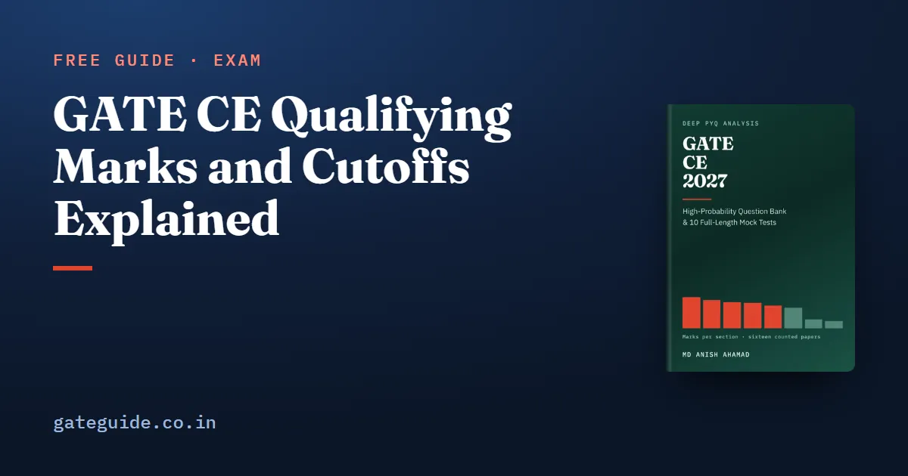

GATE CE Qualifying Marks and Cutoffs Explained

The GATE CE qualifying mark is the threshold the organising institute sets for the Civil Engineering paper once it has been evaluated. Reach it and you get a scorecard. For the General category it was 28.3 in 2024, 29.2 in 2025 and 28.7 in 2026, each figure read from that year's official cut-off page. The admission cutoff that decides a seat is a separate, later and much higher number. This guide explains both, with the year and source on every figure.
In this guide
Key takeaways
- The General qualifying mark is computed from the paper: , where and are the mean and standard deviation of all CE candidates' marks.
- OBC-NCL and EWS receive of the General figure; SC, ST and PwD receive .
- Civil's General figure stayed inside a band of 0.9 marks from 2024 to 2026, always above the floor of 25.
- Fewer candidates appeared for Civil each year: 85,869 in 2024, 79,951 in 2025, 76,385 in 2026.
- Civil has been sat in two sessions every year since 2019, but each official page lists one qualifying mark for the paper.
The formula, and what it rules out
The GATE 2027 information brochure sets the rule for every test paper:
is the mean and the standard deviation of the marks of all candidates who appeared for the paper. OBC-NCL and EWS candidates qualify at of the General figure; SC, ST and PwD candidates at of it.
Read it as three limits. The General mark cannot go below 25 or above 40. It is set by the whole cohort's marks, so it cannot be known before the exam. And it becomes the anchor of the GATE score, the mark that is mapped to a score of 350.
Past CE qualifying marks, by year
The rows below are taken from the official cut-off page of each year's organising institute, for paper code CE. They record what happened; they do not forecast 2027.
| Year | Organising institute | General | OBC-NCL / EWS | SC / ST / PwD | Registered | Appeared |
|---|---|---|---|---|---|---|
| 2024 | IISc Bengaluru | 28.3 | 25.4 | 18.8 | 1,08,136 | 85,869 |
| 2025 | IIT Roorkee | 29.2 | 26.2 | 19.4 | 1,01,596 | 79,951 |
| 2026 | IIT Guwahati | 28.7 | 25.8 | 19.1 | 97,486 | 76,385 |
Reading the three rows
The figure was set by the cohort, not the floor. In all three years the General mark was above 25, so for the Civil paper was itself between 28.3 and 29.2. The floor did not bind in any of them.
The band is narrow. Three different organising institutes, three different pairs of question papers, and the General figure moved by less than one mark. That is a fact about three years. It is not a promise that 2027 will land in the same band, because a single hard pair of papers can pull down.
The cohort is shrinking, not growing. Registrations fell from 1,08,136 to 97,486 between 2024 and 2026, and the number who appeared fell from 85,869 to 76,385. A smaller cohort says nothing by itself about the qualifying mark; only the spread of marks does.
Two sessions, one qualifying mark
From 2019 to 2026 Civil was examined as two papers a year: two sessions, two different question papers, two answer keys. Yet each official cut-off page gives Civil one row. Whether 2027 follows the same pattern is for the official schedule to say.
The brochure explains how the two are brought together. For a paper held in more than one session, raw marks are converted to normalised marks for that paper, on the assumption that the ability of candidates is spread the same way across sessions. The score is then computed from the normalised marks. The score calculation guide works through both formulae. The practical point: the raw mark you counted from your own session's answer key is not the number that is compared across the paper.
Qualifying is the floor, not the target
A General qualifying mark in the high twenties is a low bar on a 100-mark paper. General Aptitude alone was exactly 15 marks in all sixteen Civil papers from 2019 to 2026, both sets, as counted question by question for the GATE CE 2027 book. Preparing to cross the qualifying line is preparing for a scorecard that nobody will rank you on.
Set the target from the other end. Decide which programmes or recruiters you want, find the closing data they publish after each cycle, and work back to a mark. For a worked example of a target built section by section, the 50-mark arithmetic for GATE CE shows which shares of which sections add up, and how thin the margin is when one section falls badly on the day.
Admission and PSU cutoffs are someone else's number
An admission cutoff is the closing score or rank of one programme at one institute, for one category, in one counselling round. It is produced by that counselling process and published by it. It moves with the institute, the specialisation, the category and the round, and later rounds usually close lower.
So no honest guide can print "the Civil cutoff for institute X". Look for the round-wise closing figures on the counselling portals and institute pages after each cycle. Public sector recruiters are the same: each one sets its own discipline mapping, shortlisting cutoff and weight between GATE score and interview in its own notification. Check the current notification every time.
The official pages carry the same warning: qualifying in GATE does not guarantee admission, scholarship or a job, and GATE qualification does not assure a PSU job.
Marks and score
Your scorecard shows marks out of 100 and a GATE score out of 1000. The score places the General qualifying mark at 350 and the mean of the top 0.1 per cent of candidates, or the top 10 if that is larger, at 900, and fills in everything else proportionally. A mark far enough below the qualifying mark can turn into a negative score. That is the formula at work, not an error.
Turning this into a plan
Three habits decide how far above the qualifying mark you finish.
- Follow the counted marks. Across sixteen papers, Structural Engineering averaged 15.1 marks, Geotechnical 13.8, Engineering Mathematics 12.9 and Water Resources 12.6; Geomatics averaged 4.4 and Construction Materials and Management 3.5. The GATE CE subject-wise weightage guide prints the range of each section, not only its mean.
- Protect your net marks. A wrong 1-mark MCQ costs one-third of a mark and a wrong 2-mark MCQ two-thirds; MSQ and NAT carry no penalty. The rules are common to every paper, and the marking scheme guide, written for CSE, sets them out.
- Score full papers section by section. A total hides which section is leaking.
The GATE CE 2027 book is built for that: 623 pages on all sixteen counted papers, 924 questions with worked solutions, 650 of them in 10 full-length mocks in the 2027 pattern.
What to check and when
- Before the exam: confirm the CE syllabus, the pattern and your session on gate2027.iitm.ac.in. No page can know the 2027 qualifying mark in advance. The GATE 2027 exam dates guide has the result date.
- With the result: the organising institute publishes every paper's qualifying marks. That is the only authoritative source for the 2027 Civil figure.
- After the result: admission and recruitment cutoffs appear on the portals and in notifications, round by round.
GATE Guide is an independent site and is not affiliated with IIT Madras, IISc or GATE. Confirm every date and rule on the official GATE 2027 website and check the current notification before acting on any number.
Frequently asked questions
What are the qualifying marks for GATE Civil Engineering?
They are computed by the organising institute after the exam. For the General category the brochure formula is , with the mean and the standard deviation of the marks of all CE candidates. OBC-NCL and EWS receive of that figure, and SC, ST and PwD . The exact numbers are published with each year's result.
What was the GATE CE qualifying mark in 2026?
The official GATE 2026 cut-off page published by IIT Guwahati lists 28.7 for General, 25.8 for OBC-NCL and EWS, and 19.1 for SC, ST and PwD in the Civil Engineering paper. That is the record for one year only. The 2027 figure will be computed afresh from the 2027 paper.
Is there a separate qualifying mark for each GATE CE session?
No. Civil has been examined in two sessions, each with its own question paper, yet the official cut-off pages for 2024, 2025 and 2026 each list a single row for the CE paper. For a multi-session paper the brochure converts raw marks to normalised marks before the GATE score is worked out.
Is the GATE CE cutoff the same as the qualifying mark?
No. The qualifying mark decides who receives a scorecard. An admission cutoff is the closing score or rank of a programme in one counselling round, and a PSU sets its own shortlisting cutoff in its own recruitment notice. Both are published by those bodies, vary by year and category, and should be checked in the current notification.
How many marks should I target in GATE CE?
Well above the qualifying mark, because admission and recruitment go by rank and score. The General qualifying mark for Civil sat between 28.3 and 29.2 in 2024 to 2026. Choose the programmes or recruiters you want, look up the closing data they publish, and set your target from that rather than from the qualifying figure.
Sources
- GATE 2027 official website (IIT Madras)
- GATE 2027 Information Brochure (official PDF)
- GATE 2027 CE syllabus (IIT Madras, official PDF)
- GATE 2026 cut-off marks (IIT Guwahati, official)
- GATE 2025 cut-off marks (IIT Roorkee, official)
- GATE 2024 cut-off marks (IISc Bengaluru, official)
Dates, fees and the syllabus are set by the GATE 2027 organising institute and can change. Always confirm at gate2027.iitm.ac.in.